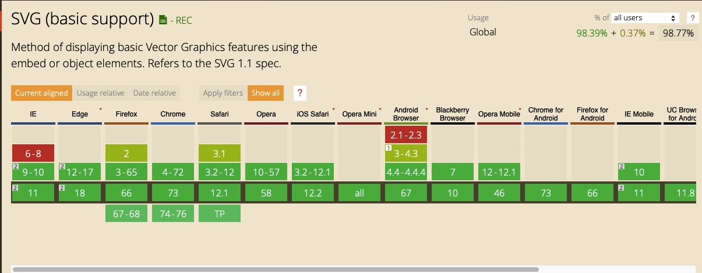
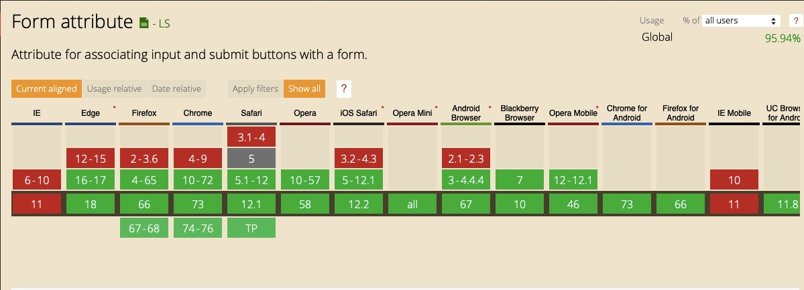
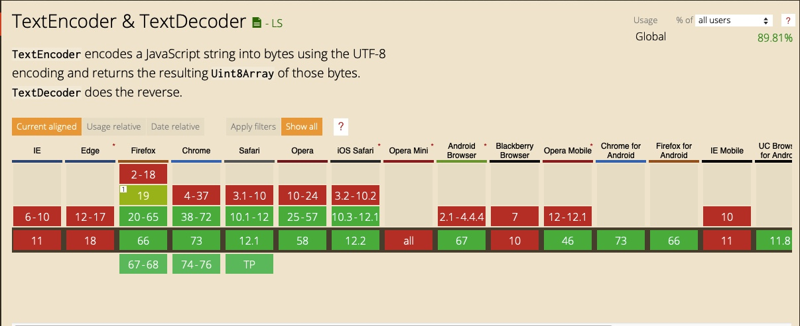
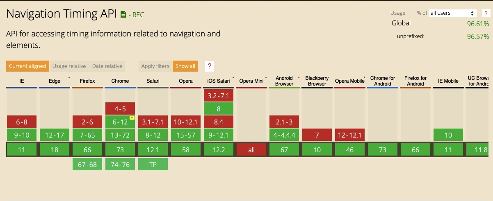

What is the difference between the usage of HTML and CSS?
HTML is scripting language and is used as the basis for a webpage. It is bland and has minimal design aspect to it. This is where CSS comes in and adds the style elements to it. We can make our page come alive.
What is the newest version of HTML?
HTML5
What are the top five most used HTML5 elements? If not sure, make a guess.
body, header, p, ol, img
Have you checked out the HTML5 cheatsheet?
Yes. at this link.
What is the difference between semantic and non-semantic elements?
Semantic Elements:
A semantic element clearly describes its meaning to both the browser and the developer. These elements clearly defines its content. In other terms semantic tags are those tags whose name can easily let you know which type of content take place in it. eg. header, article and footer.
Non-Semantic Elements:
Non-semantic element are the element which Tells nothing about its content. In other terms element whose name doesn’t suggest you what they do. e.g. div and span.
Why do we prefer using semantic elements?
Semantic elements make your code more readable and easier to maintain
Do all browsers support all of the newest HTML / CSS elements?
Yes
Test the following elements on Can I Use: svg, nav, code, form, datalist. Which browser version support them and which do not?
   